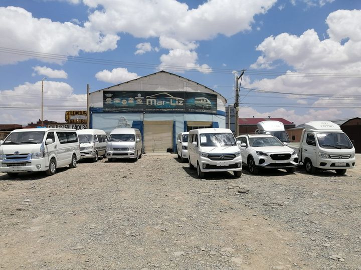
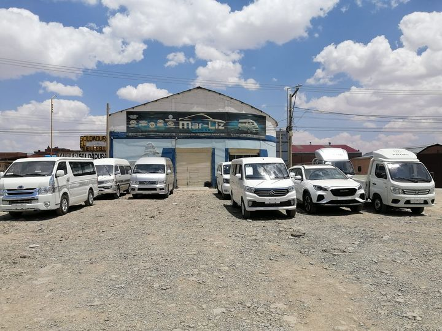

Conoce Más Sobre Nuestra Empresa
Misión
MAR-LIZ AUTOS SRL es una empresa del rubro automotriz que brinda servicios de comercialización, mantenimiento, venta de partes y accesorios de vehículos automotores en la ciudad de Oruro, con personal competente y comprometido con la excelencia.
Visión
Ser una empresa líder en el sector automotor de la ciudad de Oruro, reconocida a nivel nacional por el servicio de calidad y excelencia, logrando la satisfacción de nuestros clientes.
Nuestra Historia
En MAR-LIZ AUTOS S.R.L, nuestra historia es un legado de compromiso constante con la excelencia. Explora nuestra amplia gama de vehículos.
 
